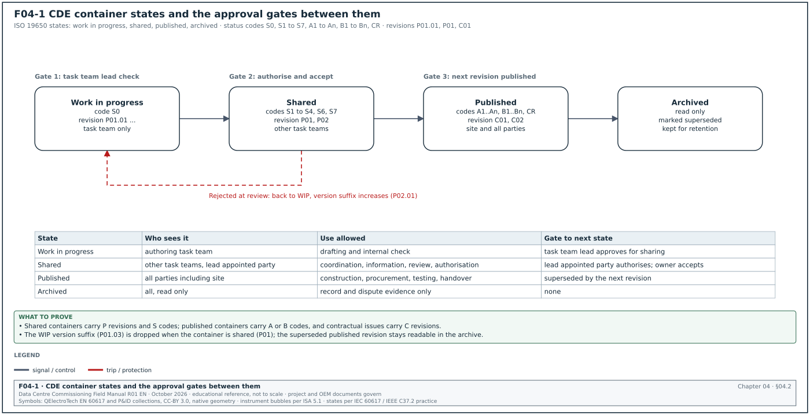
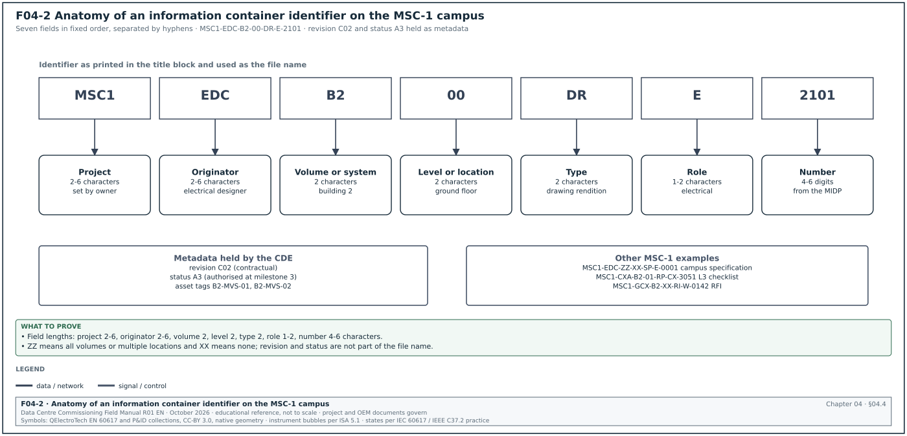
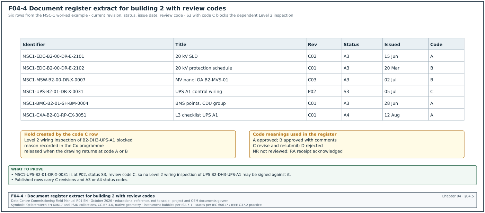
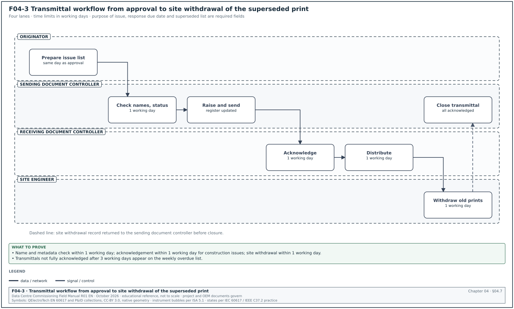
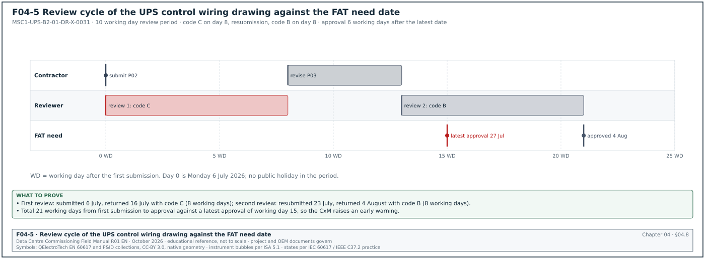
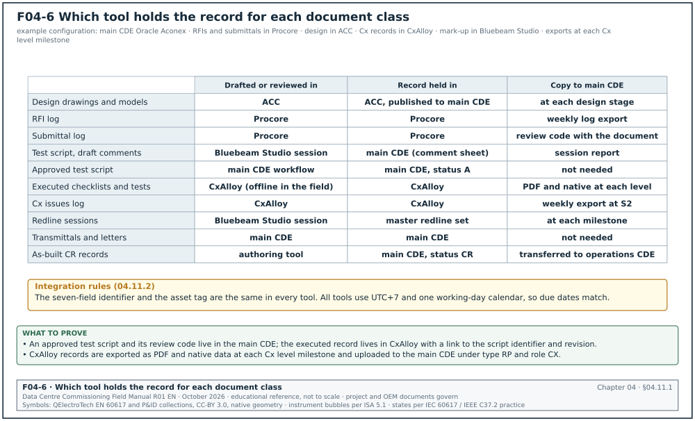
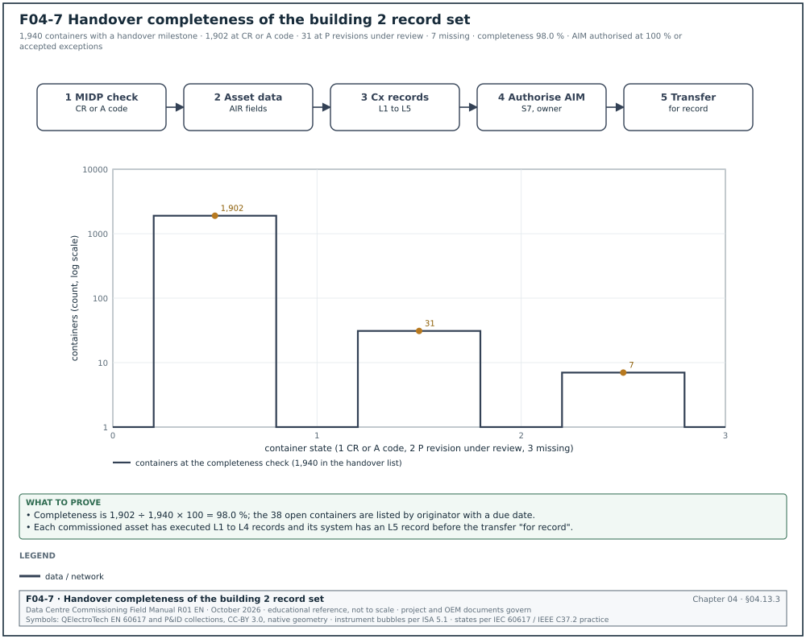

04.0Scope of this chapter
This chapter explains how project documents are named, versioned, reviewed, issued, stored and replaced on a hyperscale data-centre campus. It also explains how the commissioning manager (CxM) uses the document control system so that every inspection and test is done against the current approved document. Chapter 05 covers requests for information (RFI), chapter 06 covers submittals and method statements, and chapter 07 covers inspection and test plans.
- Purpose and roles. What document control does, the document classes on a data-centre project, and who is responsible for each step (document controller, information manager, design manager, CxM).
- ISO 19650 concepts. Information containers, the common data environment (CDE), the appointing party and appointed parties, and the four container states: work in progress (WIP), shared, published and archived.
- Status and revision codes. Suitability codes S0 to S7, the published codes A and B, the as-built record status (CR) for as-constructed records, the revision codes P01, P01.01 and C01, and the legacy BS 1192:2007 codes.
- Naming. The seven-field container identifier (project, originator, volume or system, level or location, type, role, number) with the code lists and examples from the MSC-1 campus.
- Registers and metadata. Document register and drawing register fields, with a filled example.
- Review status codes. The A, B, C and D review codes used on many contracts in Asia and the Middle East, and what each code allows the contractor to do.
- Transmittals. Transmittal fields, the transmittal workflow, acknowledgement, and the difference between a transmittal and project mail.
- Review cycle time limits and key performance indicators (KPI). The time limits in FIDIC 2017, the United States unified facilities guide specification (UFGS) 01 33 00 and NEC, and how to calculate turnaround and overdue figures.
- Site control. Superseded document control on site, redline mark-ups, as-built drawings and the record set handed to the operator.
- CDE tools. What Oracle Aconex, Procore, Autodesk Construction Cloud (ACC), CxAlloy and Bluebeam Studio are used for on a commissioning programme.
- Commissioning records. How the commissioning document set (owner's project requirements, basis of design, Cx plan, checklists, test scripts, issues log) is held in the CDE.
Documents and standards used: ISO 19650-1:2018 and ISO 19650-2:2018 and the UK National Annex guidance for ISO 19650-2 (building information modelling (BIM) Toolkit National Annex Guidance and the UK National Annex code lists as implemented in Autodesk Construction Cloud). The chapter also uses BS 1192:2007 (withdrawn), FIDIC Conditions of Contract for Construction 2017, UFGS 01 33 00 Submittal Procedures and NEC contracts guidance on the period for reply. It also uses Oracle Aconex help, Procore support documentation, Autodesk Construction Cloud help, CxAlloy and Bluebeam product documentation, and the MSC-1 case ledger.
04.1Purpose of document control on a data-centre campus
04.1.1What document control does
Document control is the set of rules and records that decides which version of each document is valid for which use and who may change it. It also records who has received each version and where the old versions are kept. On a data-centre campus the volume is large. The MSC-1 worked example has 4 buildings, 3 data halls per building and 12 data halls in total. Each hall has 16 coolant distribution units (CDU), 8 block transformers and their uninterruptible power supply (UPS) systems. A single building carries several thousand drawings, several hundred submittals and several thousand commissioning checklists.
Document control has six jobs.
- Identify each document. Every document has one unique identifier that does not change across revisions. The identifier is built from fixed fields (section 04.4).
- Control the revision. Every issue of a document carries a revision code and a status code. The pair tells the reader whether the content is preliminary or contractual and what it may be used for.
- Control distribution. Every issue to another organisation is sent on a transmittal and recorded. The register shows who received which revision and when.
- Control review. Documents that need review (design drawings, submittals, method statements, test scripts) pass through a workflow with a named reviewer, a due date and a review code.
- Remove superseded information. When a new revision is published, the old one is marked superseded in the CDE and removed or stamped on site.
- Keep the record. Every revision, transmittal, comment and review code is kept in the archive for the life of the asset and for any dispute.
Check: A tester who picks up a test script on site must be able to answer three questions from the document itself and the register. The questions are: which revision is current, is it approved for use (status A1 or C01 or higher on most projects), and has it been superseded. If the tester cannot answer all three in under two minutes, the document control system is failing at the point of use.
04.1.2Document classes on a data-centre project
The table lists the document classes that the CxM uses and the usual originator of each class.
| Document class | Examples on MSC-1 | Usual originator | Needs formal review |
|---|---|---|---|
| Owner requirements | owner's project requirements (OPR), design standards, operations requirements | owner | owner sign-off |
| Design | basis of design (BOD), drawings, specifications, calculations, schedules | design consultants | yes, at each design stage |
| Contractor design and shop drawings | medium-voltage (MV) switchgear general arrangement, UPS wiring diagrams, CDU piping isometrics | contractors and suppliers | yes, as submittals (chapter 06) |
| Product information | datasheets, certificates, type test reports | manufacturers | yes, as submittals |
| Method statements and risk assessments | method statement and risk assessment (MSRA) for energising 20 kV switchgear, MSRA for flushing the technical cooling system (TCS) | contractors | yes (chapter 06) |
| Quality records | inspection and test plans (ITP), inspection requests, non-conformance reports (NCR) | contractors and inspectors | yes (chapters 07 and 09) |
| Commissioning documents | Cx plan, Level 1 to Level 5 checklists, test scripts, issues log, Cx reports | CxM and commissioning authority (CxA) | yes, by the CxA and the owner |
| Correspondence | letters, notices, minutes, RFIs, site instructions | all parties | depends on type |
| Handover records | as-built drawings, operation and maintenance (O&M) manuals, asset data | contractors | yes, before practical completion |
04.1.3Roles and responsibilities
The role names differ between programmes. The functions in the table are always present.
| Role | Main tasks in document control | Typical time limit |
|---|---|---|
| Information manager (appointing party) | writes the information standard, the naming code lists and the CDE rules; audits compliance | code lists issued before the first appointment |
| Document controller (each organisation) | checks names and metadata, issues transmittals, keeps the register, removes superseded copies | registers a received transmittal within 1 working day |
| Design manager or lead designer | assigns reviewers, checks design status before publishing, signs off design stages | per contract review period |
| Task team lead (each discipline) | approves WIP for sharing (S1 to S4), answers review comments | as set in the task information delivery plan |
| CxM | checks that commissioning uses approved documents; owns the Cx document set; reviews submittals and scripts for testability | per contract review period |
| CxA | reviews design, submittals and scripts for the owner; witnesses tests | per Cx plan |
| Site engineer or supervisor | keeps the site drawing set current, records redlines | removes a superseded drawing within 1 working day of the transmittal |
The following matrix shows who is responsible (R), accountable (A), consulted (C) and informed (I) for each step of the document cycle.
| Step | Originator | Document controller | Reviewer | CxM | Owner |
|---|---|---|---|---|---|
| Name and metadata check | R | A | I | I | I |
| Share for coordination (S1) | A | R | C | I | I |
| Submit for review (S3 or S4) | A | R | C | C | I |
| Review code (A, B, C, D) | I | I | R | C | A |
| Publish for construction (A1 or C01) | C | R | C | I | A |
| Supersede on site | I | R | I | C | I |
| Archive | I | R | I | I | A |
04.2ISO 19650 concepts and the common data environment


04.2.1Information containers and the CDE
ISO 19650-1:2018 calls any named, persistent set of information an information container. A drawing file, a model, a specification, a spreadsheet register and a test script are all information containers. The common data environment (CDE) is the agreed source of information for the project, used to collect, manage and share information containers through a managed process. A CDE can be one software product or several products joined by rules, and the rules are part of the CDE. A shared network drive without states, codes and approvals does not meet the definition.
ISO 19650-2:2018 defines the parties. The appointing party is the client (on a data-centre campus, the owner). The lead appointed party is the organisation that receives an appointment directly from the appointing party, for example the design consultant or the general contractor. Appointed parties are their subcontractors and suppliers, grouped in task teams.
04.2.2The four container states
Every information container sits in one of four states. Figure F04-1 shows the states and the approval gates between them.
| State | Who can see it | What it is used for | Gate to the next state |
|---|---|---|---|
| Work in progress (WIP) | the authoring task team only | drafting and checking inside the team | task team lead checks and approves for sharing |
| Shared | the other task teams and the lead appointed party | coordination, information, review and comment, authorisation | lead appointed party authorises; appointing party accepts |
| Published | all parties with access, including site | construction, procurement, testing, handover | superseded by a new revision, or project end |
| Archived | read-only for all; no new use | record of every transaction, revision and change | none; kept for the retention period |
The rules for moving between states are fixed in the project information standard. On most hyperscale programmes the usual practice is as follows.
- WIP to shared. The author completes a self-check, and the task team lead reviews the container against the naming rules and the content checklist. The container then moves to shared with a suitability code S1 to S4. The revision drops the WIP version suffix (P01.03 becomes P01).
- Shared to published. The lead appointed party authorises the container and the appointing party accepts it. The container receives a published code (A1 to An, or B1 to Bn for partial sign-off) and, for contractual issues, a C revision.
- Published to archived. When a new revision is published, the previous one moves to the archive automatically. The archived revision stays readable and is marked superseded.
- Rejection. A container that fails review returns from shared to WIP. It keeps its P revision, and the author increments the version suffix while correcting it.
Check: Open three published drawings for the MV switchroom of building 2 in the CDE. Confirm that each one shows a published status code, a C revision and a reviewer approval record with a date. A published drawing with a P revision and an A status is a configuration error in the CDE and must be raised with the information manager.
04.2.3Information requirements that drive the CDE
ISO 19650 links the CDE to a chain of requirement documents. The CxM needs to know them because commissioning deliverables are listed in them.
| Document | Abbreviation | Content the CxM checks |
|---|---|---|
| Organisational information requirements | OIR | owner's strategic needs, for example energy reporting and asset data for the computerised maintenance management system (CMMS) |
| Asset information requirements | AIR | asset data fields for each equipment type (tag, serial number, warranty, maintenance interval) |
| Project information requirements | PIR | information needed to answer the owner's project decisions |
| Exchange information requirements | EIR | what each appointed party must deliver, in which format, at which milestone; includes Cx records |
| BIM execution plan | BEP | the appointed party's response: naming, software, CDE use, responsibility matrix |
| Master information delivery plan | MIDP | the list of every container to be delivered, with dates and responsible task team |
| Task information delivery plan | TIDP | the same list for one task team |
Common errors: The EIR does not list commissioning records, so the Level 3 to Level 5 checklists and test reports are delivered as loose PDF files outside the CDE. Correct this at appointment stage by adding a commissioning deliverables table to the EIR. The table names each record type, its format (native and PDF), its naming type code and the milestone at which it is due.
04.3Suitability codes, published codes and revision codes
04.3.1Suitability (status) codes
The status code says what the information in a container may be used for. It does not say whether the content is correct. The codes below follow the UK National Annex to ISO 19650-2 as implemented in the Autodesk Construction Cloud naming standard. Older guidance documents show different text for S4 and S5, so the project information protocol must state the code list in force.
| Code | State | Meaning | Revision type | What the receiver may do |
|---|---|---|---|---|
| S0 | WIP | initial status, work in progress | preliminary with version (P01.01) | nothing; not visible outside the task team |
| S1 | Shared | suitable for coordination | preliminary (P01) | use for clash checks and coordination only |
| S2 | Shared | suitable for information | preliminary | read for information; no construction, no procurement |
| S3 | Shared | suitable for review and comment | preliminary | review and return comments by the due date |
| S4 | Shared | suitable for stage approval | preliminary | review for approval of the design stage |
| S5 | — | withdrawn in the current UK National Annex | not used | do not use; older documents may show "suitable for review and acceptance" |
| S6 | Shared | suitable for project information model (PIM) authorisation | preliminary | authorise the PIM at the information model milestone |
| S7 | Shared | suitable for asset information model (AIM) authorisation | preliminary | authorise the AIM before handover |
| A1, A2 … An | Published | authorised and accepted at milestone n | contractual (C01) | use for construction, procurement and testing |
| B1, B2 … Bn | Published | partial sign-off with comments at milestone n | preliminary | use the parts without comments; the parts with comments are on hold |
| CR | Published | as-constructed record document | contractual | use as the record for operation and maintenance |
A drawing with code S2 must never be used to build or to test. On a commissioning programme the most common error is a test engineer printing an S2 "for information" single-line diagram to write a test script. The script is then based on a design that has not been accepted.
04.3.2Revision codes
The National Annex guidance uses two integers with a letter prefix:
- P revisions. P01, P02 and onward are preliminary (non-contractual) revisions used while a container is shared. A WIP container carries a version suffix after a full stop: P01.01, P01.02, P01.03.
- C revisions. C01, C02 and onward are contractual revisions used when a container is published with an A code or as a CR record.
- Version suffix dropped on sharing. When a WIP container is shared, the version suffix is dropped. After five WIP versions the sequence is P01.01, P01.02, P01.03, P01.04, P01.05 and then P01.
- No reuse. A revision code is never reused for different content. If a published C02 is found to be wrong, the correction is C03.
- Separate from status. The revision code and the status code are separate metadata fields. Most CDE platforms keep them as attributes and show them in the title block; they are not part of the file name in the seven-field identifier.
Worked example: In the MSC-1 worked example, the 20 kV switchgear single-line diagram for building 2 has the following history in the register.
| Date (example) | Revision | Status | Event |
|---|---|---|---|
| 03 Feb | P01.01 | S0 | electrical designer starts the drawing |
| 10 Feb | P01.04 | S0 | internal check complete after 4 versions |
| 11 Feb | P01 | S1 | shared for coordination with the mechanical and structural task teams |
| 24 Feb | P02 | S3 | shared for owner review and comment after the coordination clash on the cable trench |
| 10 Mar | P03 | S4 | issued for stage approval after 17 owner comments were closed |
| 20 Mar | C01 | A3 | authorised and accepted for construction at milestone 3 |
| 15 Jun | C02 | A3 | protection relay type changed by RFI-B2-ELE-0142; republished |
| 30 Nov | C03 | CR | as-constructed record after the redlines from site were incorporated |
The site team holds C02 from 15 June. The C01 prints are removed from the switchroom drawing rack within 1 working day of the C02 transmittal (section 04.9).
04.3.3Legacy BS 1192:2007 codes
Many suppliers, older templates and some Asian and Middle Eastern projects still use the codes of BS 1192:2007, which was withdrawn when ISO 19650 was published. The main differences are listed below. The exact text of each legacy code must be taken from the project's own information protocol, because projects modified the list.
| Item | BS 1192:2007 practice | ISO 19650 UK National Annex practice |
|---|---|---|
| Field 3 name | volume or system | volume or system (same) |
| Field 6 name | role | role (same position, called discipline in some guidance) |
| Preliminary codes for tender, contractor design and costing | D1 suitable for costing, D2 for tender, D3 for contractor design, D4 for manufacture or procurement | removed; use S codes and the appointment milestones |
| As-built | AB codes were common | CR as-constructed record |
| Revision format | P1, P2 and C1, C2 were common | P01, P02 and C01, C02 with two integers |
Common errors: A supplier's drawing arrives with revision "C" and status "AB". The document controller maps it to the project scheme (for example C01 and CR) in the metadata. The document controller records the supplier's own revision in a separate "originator revision" field and leaves the supplier's title block unchanged.
04.4Naming information containers


04.4.1The seven fields
The container identifier is built from seven fields separated by hyphens. Each field is applied in the order shown. Figure F04-2 shows the anatomy of one MSC-1 identifier.
| Order | Field | Length | Definition | MSC-1 example |
|---|---|---|---|---|
| 1 | Project | 2–6 characters | unique project code assigned by the appointing party | MSC1 |
| 2 | Originator | 2–6 characters (3–6 recommended) | organisation that produced the information | EDC (electrical designer, example) |
| 3 | Volume or system | 2 characters | spatial or system subdivision of the project | B2 (building 2) |
| 4 | Level or location | 2 characters | level or location the information refers to | 00 (ground floor) |
| 5 | Type | 2 characters | form of the information | DR (drawing rendition) |
| 6 | Role | 1–2 characters | discipline of the author | E (electrical engineer) |
| 7 | Number | 4–6 digits | sequential number within the series | 2101 |
The full identifier is MSC1-EDC-B2-00-DR-E-2101. The revision (C02) and the status (A3) are held as metadata and printed in the title block.
Two codes have fixed meanings in fields 3 and 4: ZZ means all volumes or multiple locations, and XX means no volume or no applicable location. A campus-wide specification that applies to every building is MSC1-EDC-ZZ-XX-SP-E-0001.
04.4.2Type codes and role codes
The project code list is issued by the information manager. The National Annex guidance gives the recommended type codes, and the project may add codes. The codes most used on a data-centre commissioning programme are listed below.
| Type code | Meaning | Data-centre example |
|---|---|---|
| DR | drawing rendition | MV single-line diagram, CDU piping layout |
| M3 | 3D model | federated mechanical model of data hall 1 |
| SP | specification | building management system (BMS) specification, Power Monitoring Expert (PME) specification |
| SH | schedule | equipment schedule, cable schedule, BMS points schedule |
| CA | calculations | short-circuit study, cable sizing, pump head calculation |
| RP | report | factory acceptance test (FAT) report, Cx report, protection study report |
| MS | method statement | MSRA for energising 20 kV switchgear |
| RI | request for information | RFI-B2-ELE-0142 |
| MI | minutes or action notes | weekly Cx coordination meeting minutes |
| SN | snagging list | punch list for data hall 2 |
| HS | health and safety | lock-out tag-out (LOTO) plan |
| CO | correspondence | letters and notices |
| PR | programme | integrated Cx programme |
| SU | survey | thermographic survey |
| Role code | Discipline |
|---|---|
| A | architect |
| C | civil engineer |
| E | electrical engineer |
| F | facilities manager |
| K | client (appointing party) |
| M | mechanical engineer |
| P | public health engineer |
| S | structural engineer |
| W | contractor (lead appointed party or appointed party) |
| X | subcontractor |
| Y | specialist designer |
| Z | general (non-disciplinary) |
The National Annex list has no separate code for commissioning or for controls. Most data-centre programmes add project codes, for example "CX" for commissioning, "BM" for building management system (BMS) and "PM" for the electrical power monitoring system (EPMS). A two-character role code is allowed because field 6 is 1–2 characters long. The CxM asks the information manager to add these codes before the first Cx document is issued, so that Cx records do not appear under "Z".
04.4.3Volume and level codes for a campus
A campus needs a clear volume code list before any document is issued. The MSC-1 worked example uses this list.
| Field 3 code | Meaning | Field 4 code | Meaning |
|---|---|---|---|
| ZZ | whole campus | ZZ | multiple levels |
| SS | 150/20 kV substation | XX | no location |
| B1 to B4 | buildings 1 to 4 | 00 | ground floor (MV rooms, generator yard access) |
| CP | central plant yard (dry coolers, trim chillers) | 01 | level 1 (data halls DH1 to DH3) |
| GY | generator yard | RF | roof |
| FT | fuel farm | B1 | basement (cable trench and pipe basement) |
The level codes are 2 characters. "RF" for roof is a project code. The basement code "B1" is the National Annex example code for basement level. "B1" is also building 1 in field 3, and the position in the identifier removes the conflict. The document controller must not shorten the identifier.
04.4.4Naming equipment tags and documents together
The container identifier names the document. The equipment tag names the asset. Commissioning records link the two. The tag format is set in the asset information requirements. In the MSC-1 worked example the tag format is building, hall, system, equipment and number, for example B2-DH3-UPS-A1 (building 2, data hall 3, UPS system A, unit 1). The document identifier for the Level 3 pre-functional checklist of that UPS is MSC1-CXA-B2-01-RP-CX-3051, with the tag B2-DH3-UPS-A1 in the metadata field "Asset tag".
Worked example: The CxM needs to know how many identifiers to reserve for Level 3 checklists in building 2. Building 2 has 3 halls, each with 8 block UPS systems, 16 CDUs and 8 block transformers (MSC-1 ledger). The count of Level 3 checklists is 3 × (8 UPS + 16 CDU + 8 transformers) = 3 × 32 = 96 checklists for these three equipment types. The CxM reserves the number range 3001 to 3200 under type RP and role CX for Level 3 checklists in volume B2. This range leaves 104 numbers for the other systems in the building (switchboards, BMS controllers, fire systems). If the total exceeds 200, the range 3201 to 3400 is reserved before the range runs out.
04.4.5Steps to check a name before upload
Purpose: Stop wrong names entering the CDE, where they break search, transmittals and the MIDP.
Owner: Document controller of the originating organisation.
Steps:
- Split the identifier into fields. Count seven fields separated by six hyphens. A missing field or an extra hyphen fails the check.
- Check each field against the code list. Compare fields 1 to 6 with the current project code list (MSC1-KIM-ZZ-XX-SH-K-0002 in the worked example). An unknown code fails the check.
- Check the number against the MIDP. The number must exist in the MIDP or the TIDP for that originator and type. A number not in the plan is raised with the task team lead within 1 working day.
- Check the title block. The identifier, revision, status and title in the title block must match the metadata entered in the CDE character for character.
- Check the file name. The file name equals the identifier, with no revision or status added (for example MSC1-EDC-B2-00-DR-E-2101.pdf). Platforms that store revision as metadata reject duplicate names with different revision suffixes.
- Upload to WIP or to the shared area as the workflow requires. Record the upload in the register with the date.
Acceptance: All six checks pass. Most CDE platforms (for example the ACC naming standards function) can enforce fields 1 to 6 automatically and place non-compliant files in a holding area.
Records: CDE upload log; naming exceptions log with the reason and the person who approved each exception.
04.5Document register, drawing register and metadata


04.5.1Document register fields
The document register lists every container and its current state. Each CDE platform has its own field names. The fields below are the minimum the CxM needs to trace a commissioning document.
| Field | Type | Example value | Rule |
|---|---|---|---|
| Identifier | text, 7 fields | MSC1-EDC-B2-00-DR-E-2101 | unique; never changes across revisions |
| Title | text | Building 2 20 kV switchgear single-line diagram | plain description; system and location named |
| Revision | code | C02 | P or C with two integers |
| Status | code | A3 | from the project status list |
| Originator revision | text | Rev D | supplier's own revision, if different |
| Discipline | code | E | same as field 6 |
| Document type | code | DR | same as field 5 |
| Asset tags | list | B2-MVS-01, B2-MVS-02 | equipment tags shown or described |
| Specification section | text | 26 13 00 | link to the specification |
| Date of issue | date | 15 Jun 2026 | date the revision was published |
| Author and checker | names | A. Rahman / B. Sari | initials as on the title block |
| Approver | name and role | owner electrical lead | the person who set the A code |
| Review code | code | A, B, C or D | for reviewed documents (section 04.6) |
| Transmittal number | text | MSC1-EDC-TR-0418 | the transmittal that issued this revision |
| Superseded by | identifier and revision | C03 | blank while current |
| Related RFIs or changes | list | RFI-B2-ELE-0142, variation order (VO) 08-021 | links to chapters 05 and 08 |
| File format | list | PDF, DWG, RVT | native and PDF |
| Security class | code | internal, restricted | restricted for security layouts and network drawings |
04.5.2Drawing register fields
The drawing register is a filtered view of the document register for drawing types (DR, M2, M3). It adds the fields needed on site.
| Field | Type | Example value |
|---|---|---|
| Sheet size and scale | text | A1, 1:50 |
| Hold clouds | yes or no with reference | yes, cloud 2 "relay type on hold pending RFI-B2-ELE-0142" |
| Site copies issued | number and location | 2 copies, MV room B2-00-MV1 rack and site office |
| Site copies withdrawn | date and initials | 16 Jun 2026, DC-02 |
| Redline set | reference | RL-B2-E-2101-01 (section 04.10) |
| As-built status | code | not started, in progress, CR issued |
04.5.3Example register extract
Figure F04-4 shows this extract with the current and superseded rows marked.
| Identifier | Title | Rev | Status | Issued | Review code | Superseded by |
|---|---|---|---|---|---|---|
| MSC1-EDC-B2-00-DR-E-2101 | B2 20 kV switchgear single-line diagram | C02 | A3 | 15 Jun | A | — |
| MSC1-EDC-B2-00-DR-E-2102 | B2 20 kV protection schedule | C01 | A3 | 20 Mar | B | — |
| MSC1-MSW-B2-00-DR-X-0007 | MV switchgear panel general arrangement, suite B2-MVS-01 | C03 | A3 | 02 Jul | B | — |
| MSC1-UPS-B2-01-DR-X-0031 | UPS B2-DH3-UPS-A1 control wiring | P02 | S3 | 05 Jul | C | — |
| MSC1-BMC-B2-01-SH-BM-0004 | B2 BMS points schedule, CDU group | C01 | A3 | 28 Jun | A | — |
| MSC1-CXA-B2-01-RP-CX-3051 | L3 checklist B2-DH3-UPS-A1 | C01 | A4 | 12 Aug | A | — |
Check: The row for MSC1-UPS-B2-01-DR-X-0031 has status S3 and review code C. That drawing is still under review. No Level 2 wiring inspection of UPS B2-DH3-UPS-A1 may be signed against it, and the CxM records the dependency in the Cx programme.
04.6Review status codes and what each code allows
04.6.1The A, B, C, D scheme
Many contracts in Asia and the Middle East use a four-letter review code for contractor documents (shop drawings, submittals, method statements). The wording is set by each contract's specification. The table gives the usual meaning and the action each code allows.
| Code | Usual wording | Work allowed | Resubmission | Typical next step |
|---|---|---|---|---|
| A | approved; no comments | proceed with fabrication, procurement, installation and testing | none needed | issue for construction |
| B | approved with comments; approved as noted | proceed, incorporating every comment | resubmit only if the contract asks for a record copy with the comments incorporated, within 10 working days or the contract period | contractor confirms each comment in writing |
| C | revise and resubmit | no fabrication or installation of the affected items; preparatory work at the contractor's risk only | required, within 10 working days or the contract period | contractor answers every comment on a comment response sheet |
| D | rejected | none | new submission needed | contractor resubmits a compliant proposal or a new product |
Under code B the contractor proceeds and incorporates the comments; under code C fabrication of the affected items stops until the resubmission is returned with code A or B.
Some specifications add more codes. UFGS 01 33 00 (the United States unified facilities guide specification) uses five codes: A approved as submitted, AN approved as noted, RR disapproved as submitted and resubmit, NR not reviewed, and RA receipt acknowledged (for informational submittals). The mapping to the four-letter scheme is: A to A, AN to B, RR to C or D, NR and RA have no equivalent and must be listed separately in the register.
04.6.2Rules the CxM applies to review codes
- One code per document. A package with several drawings may have a different code for each drawing. The transmittal lists the code per drawing.
- Comments are numbered. Every comment has a number, a location (sheet, grid, cloud) and a required action. A comment that only says "check" is not accepted.
- Code B comments are tracked to closure. The register keeps a comment count and a closed count. A code B drawing with open comments may be built, but the Level 2 inspection checks the comments.
- Code C stops dependent work in the Cx programme. The CxM marks every checklist and test that depends on a code C document as blocked, with the document identifier as the reason.
- No verbal codes. A review code given in a meeting is recorded in minutes but is not valid until the stamped document is returned through the CDE.
- Approval does not transfer design responsibility. Under most contracts a review code does not relieve the contractor of responsibility for errors in its documents. The exact wording is in the contract (for example, FIDIC 2017 Yellow Book Sub-Clause 5.2; the governing wording is in the Particular Conditions of the signed contract).
04.6.3Comment response sheet fields
| Field | Type | Example value |
|---|---|---|
| Comment number | integer | 07 |
| Document and revision | identifier | MSC1-UPS-B2-01-DR-X-0031 P02 |
| Location | text | sheet 4, terminal block X12 |
| Reviewer comment | text | Battery breaker auxiliary contact is not wired to the BMS interface terminal X12:5. |
| Reviewer and role | name | CxM electrical |
| Contractor response | text | Added wire 2041 from QF-BAT aux 13-14 to X12:5. |
| Revised in revision | code | P03 |
| Reviewer verdict | closed or open | closed |
04.7Transmittals


04.7.1What a transmittal is
A transmittal is the formal record that a defined set of documents, each at a defined revision and status, was sent from one organisation to another for a stated purpose on a stated date. In Oracle Aconex, a transmittal updates the recipients' document registers as part of the audit trail. Project mail is used for correspondence, and a document attached to mail is not registered. On every platform the rule is the same: a document issued for use must travel on a transmittal. An email attachment is an uncontrolled copy.
04.7.2Transmittal fields
| Field | Type | Example value |
|---|---|---|
| Transmittal number | text | MSC1-EDC-TR-0418 |
| Date sent | date and time | 15 Jun 2026 14:20 |
| From (organisation and person) | text | electrical designer, document controller DC-01 |
| To (organisations and persons) | list | general contractor document control; MV switchgear subcontractor; CxM |
| Copy to | list | owner electrical lead; CxA |
| Purpose of issue | code | for construction, for review, for information, for coordination, for tender, for record |
| Documents | table | identifier, title, revision, status, format, number of copies |
| Reason for issue | text | revision C02 after RFI-B2-ELE-0142 changed relay type |
| Response required | yes or no | yes, acknowledgement |
| Response due | date | 17 Jun 2026 (2 working days) |
| Superseded documents | list | MSC1-EDC-B2-00-DR-E-2101 C01 |
| Instruction to recipient | text | Withdraw C01 prints from MV room B2-00-MV1. |
| Acknowledgement | name and date | received by DC-GC-03, 15 Jun 2026 16:05 |
04.7.3Transmittal workflow and time limits
Figure F04-3 shows the transmittal workflow as a swimlane between the originator, the document controller, the receiving organisation and the site.
Trigger: A document reaches a state or status that must be communicated (shared for review, published for construction, returned with a review code, issued as a record).
Owner: Document controller of the sending organisation.
Steps:
- Prepare the issue list. The originator lists the identifiers, revisions and purpose. Time limit: same working day as the approval.
- Check names and metadata. The document controller checks each container (section 04.4.5) and the status and revision against the approval record. Time limit: 1 working day.
- Raise the transmittal. The document controller creates the transmittal in the CDE, attaches the containers, enters the purpose, the response due date and the superseded list.
- Send and log. The CDE sends the transmittal and updates the register. The register shows the new revision as current.
- Acknowledge. The receiving document controller acknowledges receipt. Time limit: 1 working day for construction issues, 2 working days for other purposes.
- Distribute internally. The receiving document controller sends the documents to the named users and to site. Time limit: 1 working day.
- Withdraw superseded copies on site. The site engineer removes or stamps the old prints (section 04.9). Time limit: 1 working day for construction issues.
- Close. The sending document controller closes the transmittal when every acknowledgement is in. Unacknowledged transmittals older than 3 working days are reported in the weekly document control report.
Acceptance: Every recipient has acknowledged; the register shows the new revision as current; the site withdrawal record is signed.
Records: transmittal record with acknowledgements; site withdrawal record (section 04.9.2).
Common errors:
- Purpose of issue left blank. The receiver cannot tell whether an S3 drawing is for review or for construction. The CDE template must make the purpose a required field.
- Superseded list missing. The site keeps both revisions. Make the superseded list a required field for every construction issue.
- Transmittal sent to a person who has left the project. Acknowledgement never arrives. The document controller updates the distribution matrix weekly from the project directory.
- Large packages. A transmittal with 300 drawings is not reviewed properly. Some platforms limit the number of documents per transmittal; split large issues by system and building.
04.7.4Distribution matrix
The distribution matrix says which roles receive which document types. The table is an extract from the MSC-1 worked example.
| Document type | General contractor | MV subcontractor | BMS integrator | CxM | CxA | Owner operations |
|---|---|---|---|---|---|---|
| MV single-line diagrams (DR, E) | construction | construction | information | construction | review | information |
| BMS points schedules (SH, BM) | construction | — | construction | construction | review | information |
| Cx test scripts (RP, CX) | information | for use | for use | owner | review | information |
| Method statements (MS) | review | for use (own) | for use (own) | review | information | — |
| As-built records (CR) | record | record | record | record | information | record |
Worked example: Revision C02 of MSC1-EDC-B2-00-DR-E-2101 is published on 15 June at 14:20. The distribution matrix sends it to the general contractor, the MV subcontractor, the CxM (construction), the CxA (review) and the BMS integrator and owner operations (information): 6 organisations. Acknowledgements arrive from 5 organisations on 15 and 16 June. The BMS integrator acknowledges on Friday 19 June. Counting 15 June as day 0, 16, 17, 18 and 19 June are working days 1 to 4. The acknowledgement took 4 working days against the 1 working day limit for construction issues and passed the 3 working day reporting threshold. The transmittal appears on the weekly overdue list. The document controller records the reason given by the integrator (the person named in the matrix was on leave). The matrix is updated to include a second contact.
04.8Review cycle time limits and turnaround KPIs


04.8.1Time limits set by contracts and specifications
The review period is set by the contract. The CxM must read the contract clause and the specification section before agreeing a review schedule. The table lists published values from common forms.
| Source | Document type | Review period | Notes |
|---|---|---|---|
| FIDIC Conditions of Contract for Plant and Design-Build (Yellow Book) 2017, Sub-Clause 5.2.2 | contractor's documents submitted for review | not more than 21 days unless the Employer's Requirements state otherwise | days are calendar days under FIDIC; some amended contracts change 21 to 30 days (the period and, for a Red Book contract, the sub-clause number are read from the signed contract) |
| UFGS 01 33 00 (US federal guide specification) | submittals for quality assurance and quality control (QA/QC) manager approval | at least 15 working days | value in brackets, to be edited by the specifier |
| UFGS 01 33 00 | submittals approved by the Contracting Officer | at least 20 working days; 30 working days suggested for projects of 180 or more calendar days | resubmittal review period equals the original |
| NEC (ECC) | any communication needing a reply | the "period for reply" stated in Contract Data Part 1 (for example 1 or 2 weeks) | clause 13.3; a specific period in the contract overrides it |
| Typical Asia and Middle East owner specification | shop drawings and material submittals | 10 to 14 days | contract governs; check whether days are working or calendar |
Before the first submission, the CxM confirms whether the contract counts working days or calendar days and records the answer in the Cx plan. A 14-calendar-day period over a public holiday week in Jakarta (for example the Idul Fitri collective leave) can contain only 6 or 7 working days.
04.8.2Turnaround KPIs
The document control report shows the following measures each week. Each measure has a definition that can be calculated from the register.
| KPI | Definition | Target on the MSC-1 worked example |
|---|---|---|
| Average review turnaround | mean of (date returned − date received) for documents returned in the week, in working days | ≤ 10 working days |
| Percentage returned on time | documents returned by the due date ÷ documents due in the week × 100 | ≥ 90 % |
| Overdue reviews | documents past the due date and not returned | 0 older than 5 working days past due |
| First-time approval rate | documents returned code A or B at first submission ÷ documents returned × 100 | ≥ 70 % |
| Resubmission count | mean number of submissions per approved document | ≤ 1.5 |
| Unacknowledged transmittals | transmittals without full acknowledgement after 3 working days | 0 |
| Superseded copies on site | prints of superseded revisions found in the weekly site audit | 0 |
| Naming exceptions | uploads placed in the holding area for naming errors in the week | trend down; reason recorded |
04.8.3Calculating turnaround and the due date
Figure F04-5 shows the review cycle of this worked example on a working-day axis.
Worked example: The UPS subcontractor submits MSC1-UPS-B2-01-DR-X-0031 P02 on Monday 6 July 2026 at 16:00. The contract states a review period of 10 working days counted from the next working day after receipt, and the project calendar has no holiday in July. Day 1 is Tuesday 7 July, so the due date is Monday 20 July (working days: 7, 8, 9, 10, 13, 14, 15, 16, 17 and 20 July). The reviewer returns the drawing on Thursday 16 July with code C, which is 8 working days. The subcontractor resubmits P03 on Thursday 23 July. The second review is due on Thursday 6 August and is returned on Tuesday 4 August with code B (8 working days). The total elapsed time from first submission to approval is 6 July to 4 August, which is 21 working days. The UPS factory needs the approved control wiring drawing 6 weeks before the factory acceptance test (FAT). If the FAT is planned for 7 September, the latest approval date is 27 July. The approval on 4 August is 6 working days late. The CxM raises an early warning to move the FAT, or to accept a FAT with the wiring drawing at code B and the comments listed in the FAT procedure.
04.8.4Escalation for overdue reviews
- Due date minus 2 working days. The CDE sends a reminder to the reviewer. The document controller lists the item in the daily look-ahead.
- Due date. The design manager calls the reviewer and records a committed return date.
- Due date plus 3 working days. The item is listed in the weekly project meeting with the committed date and the impact on the programme.
- Due date plus 5 working days. The project manager writes to the reviewing organisation. The contractor may give a notice under the contract (for example a delay notice), as described in chapter 08.
- Deemed approval clauses. Some contracts state that a document not reviewed within the period is deemed to have received no objection. The CxM checks the contract for such a clause. A deemed approval of a test script or a points list can bring an untested sequence to the integrated systems test (IST) stage.
04.9Superseded document control on site
04.9.1Why site copies need their own control
The CDE controls the electronic copies. Printed drawings in a switchroom, a tablet with downloaded files, and a test folder carried by a testing contractor are outside the CDE once they are printed or downloaded. Most errors in testing against old documents come from these copies.
04.9.2Site copy control procedure
Purpose: Confirm that every printed or downloaded document used on site is the current revision.
Owner: General contractor's site document controller, with the CxM for commissioning documents.
Steps:
- Issue site copies from the CDE only. Each print carries a stamp "CONTROLLED COPY No. n" with the date printed and the revision. Uncontrolled prints carry "UNCONTROLLED, FOR INFORMATION ONLY".
- Record each copy. The site copy register lists the copy number, the location (for example the drawing rack in MV room B2-00-MV1) and the holder.
- Withdraw on supersession. Within 1 working day of a construction transmittal that supersedes a revision, the site document controller collects every controlled copy of the old revision. The controller stamps each copy "SUPERSEDED" with the date and either destroys it or files it in the superseded cabinet. The new revision is placed in the same location.
- Use QR codes where available. A quick response (QR) code on each print links to the CDE record. Scanning the code on site shows whether the printed revision is still current.
- Check tablets. Tablets used for checklists must open documents from the CDE in online mode or synchronise before each shift. Offline copies older than the last synchronisation are not used for sign-off.
- Audit weekly. The site document controller and a CxM representative audit 20 printed documents chosen at random across the active rooms. Any superseded copy found is recorded as a document control non-conformance.
Acceptance: Zero superseded copies in the weekly audit; site copy register matches the drawing register.
Records: site copy register; superseded withdrawal record; weekly site document audit sheet.
04.9.3Site document audit sheet fields
| Field | Type | Example value |
|---|---|---|
| Audit date and auditor | date, name | 14 Aug 2026, DC-GC-03 and CxM electrical |
| Location | text | B2-00-MV1 drawing rack |
| Identifier found | identifier | MSC1-EDC-B2-00-DR-E-2101 |
| Revision on the print | code | C01 |
| Current revision in CDE | code | C02 |
| Result | current or superseded | superseded |
| Action | text | print withdrawn and stamped; C02 placed; NCR DC-0012 raised |
| Signature | initials | DC-GC-03 |
Common errors: Test engineers bring their own printed test scripts from the office. The CxM requires every script used in a witnessed test to carry the controlled-copy stamp, and the witness checks the revision against the CDE before the test starts (chapter 07).
04.10Redlines and as-built control
04.10.1Redline rules
A redline is a mark-up on a controlled site copy that records a difference between the installed work and the drawing. Redlines are the input to the as-built drawings.
- Use one master redline set per drawing. The site keeps one master redline copy per drawing, identified as RL-identifier-sequence (for example RL-B2-E-2101-01). Redlines on other copies are transferred to the master within 1 working day.
- Use fixed colours. Red for additions, green for deletions, blue for notes that are not part of the drawing. The colour convention is printed in the legend of the master copy.
- Reference the authority. Each redline carries the authority for the change: RFI number, site instruction, NCR or variation number. A redline with no authority is a deviation and is raised as an NCR (chapter 09).
- Date and initial each redline. The person recording the change and the date are written next to the cloud.
- Record measured values. Cable routes, valve positions, sensor locations and spare ways are recorded with measured dimensions or panel positions.
- Electronic redlines. Where markups are made in a shared PDF session (for example a Bluebeam Studio Session), the session record keeps the author and time of each markup. Each markup can be edited only by its author. The master redline set is exported from the session at each milestone.
04.10.2As-built process
Trigger: A system reaches Level 3 sign-off, or the contract milestone for as-built drawings.
Owner: The contractor who produced the drawing, with the design consultant where the contract requires the designer to update its own drawings.
Steps:
- Freeze the redline set. The master redline set for the system is scanned and uploaded to the CDE with status S2 and type DR, linked to the drawing.
- Incorporate. The author updates the native file and issues it at status S3 for review with all clouds and the authority references.
- Verify on site. The reviewer, with the CxM for commissioned systems, checks a sample on site. For the MSC-1 worked example the sample is all MV and low-voltage (LV) switchgear schedules, all BMS points schedules, and 10 % of cable routes.
- Publish as CR. The approved as-built drawing is published with status CR and a C revision.
- Close the redline set. The master redline copy is archived and the site copy register is closed for that drawing.
Acceptance: Every redline cloud is shown on the CR drawing or closed with a reason; the CR drawing matches the site sample.
Records: redline master set; as-built verification sheet; CR transmittal.
Worked example: The BMS points schedule for the CDU group in building 2 hall 3 (MSC1-BMC-B2-01-SH-BM-0004 C01) lists 16 CDUs with 42 points each, which is 672 points. During Level 3 testing, 3 points were added on each CDU (secondary loop leak detection status, filter differential pressure and pump 2 run hours), as instructed by RFI-B2-BMS-0087. The master redline shows 3 × 16 = 48 added points with the authority "RFI-B2-BMS-0087". The as-built schedule C02 lists 720 points. During verification the CxM compares the as-built schedule with the BMS database export: 720 points in both, with 0 differences in names and addresses. The schedule is published as CR at revision C03.
04.10.3As-built verification sheet fields
| Field | Type | Example value |
|---|---|---|
| Drawing identifier and revision | identifier | MSC1-BMC-B2-01-SH-BM-0004 C02 |
| Redline set | reference | RL-B2-BM-0004-01 |
| Redline clouds counted | integer | 16 |
| Clouds incorporated | integer | 16 |
| Site sample | text | all 720 points compared with BMS export |
| Differences found | integer | 0 |
| Verified by | name, role, date | CxM controls, 02 Nov 2026 |
| Result | accept or reject | accept |
04.11CDE tools and what each is used for
04.11.1Tools on a commissioning programme
A hyperscale programme can use more than one platform. Figure F04-6 shows, for an example configuration, the tool in which each document class is drafted, the tool that holds the record and when a copy goes to the main CDE. The owner or the general contractor chooses the main CDE, and specialist tools are used for commissioning and for drawing mark-up. The table describes the functions that each vendor's documentation describes. The project information standard decides which tool holds the record for each document class.


| Tool | Functions used on a Cx programme | Record it holds |
|---|---|---|
| Oracle Aconex | document register, transmittals that update the recipients' registers, project mail, registration of incoming mail from outside the platform, review workflows, reports on document status, workflow progress and overdue actions | contractual document register, transmittals, formal correspondence |
| Procore | RFIs, submittals with workflow templates, ball-in-court tracking, drawings with linked RFIs, required on-site dates and lead times | RFI log, submittal log, drawing set for the contractor |
| Autodesk Construction Cloud (ACC) | Docs with naming standards that validate file names and attributes, status codes and revision codes, reviews, RFIs and submittals, model coordination | design models and drawings, design review records |
| CxAlloy | commissioning checklists and tests (offline use in the field, synchronised later), issues with photos, asset tracking, reports | Level 1 to Level 5 checklists, test records, Cx issues log |
| Bluebeam Studio (Sessions and Projects) | shared PDF review where many attendees mark up the same file at the same time; each markup editable by its author; session record exported as a report | review comments and redline sessions; final record exported to the main CDE |
Check: For each document class, the Cx plan names one tool as the record. A test script can be drafted and commented in Bluebeam. The approved version and its review code are held in the main CDE, and the executed test record is held in CxAlloy with a link to the script identifier and revision.
04.11.2Integration rules between tools
- One identifier everywhere. The seven-field identifier and the asset tag are the same in every tool. CxAlloy equipment records carry the asset tag; checklists carry the document identifier in a reference field.
- One record per document class. The register of the main CDE is the record for revision and status. Other tools show a copy and a link.
- Export at milestones. Commissioning records are exported from CxAlloy as PDF and native data at each Cx level milestone and uploaded to the main CDE under type RP and role CX.
- Access by role. Each tool assigns permissions to project roles. Named individuals receive a role. When a person leaves, the role is reassigned and the history stays intact.
- Time zone and calendar. All tools use the project time zone (UTC+7 for Jakarta) and the same working-day calendar, so that due dates match across tools.
04.11.3Choosing the CDE configuration at project start
Purpose: Set up the CDE so that commissioning documents can be named, reviewed and found from the first day.
Owner: Information manager, with the CxM as a consulted party.
Steps:
- Agree the folder or container structure. Use the volume code (building) and the discipline as the first two levels. Do not create folders per person or per company for published information.
- Load the code lists. Fields 1 to 6 with the project additions (CX, BM, PM roles; RF level code).
- Configure states and status codes. WIP, shared, published and archived areas with the S, A, B and CR codes. Restrict A codes to the approver roles.
- Configure workflows. At minimum: design review, submittal review, method statement review, test script review, as-built review. Each workflow has a named role, a review period in working days and an escalation step.
- Configure the transmittal template. Purpose of issue, response due date and superseded list as required fields.
- Load the distribution matrix. By role.
- Test the configuration. Upload 10 dummy containers through every workflow and confirm the register, the status, the revision and the notifications. The CxM signs the test record before the first live upload.
Records: CDE configuration record, test upload record signed by the information manager and the CxM.
04.12Commissioning documents in the CDE
04.12.1The Cx document set
The CxM owns a set of documents that must be held in the CDE with the same control as design documents.
| Document | Type code | Role code | Originator | Status needed before use |
|---|---|---|---|---|
| Owner's project requirements (OPR) | SP | K | owner | A code, published |
| Basis of design (BOD) | RP | E, M, BM | designers | A code, published |
| Cx plan | RP | CX | CxA or CxM | A code, published |
| Cx specification | SP | CX | CxA | A code, published |
| Level 1 factory and Level 2 delivery checklists | RP | CX | CxM, contractor | template at A code |
| Level 2 installation checklists | RP | CX | contractor | template at A code |
| Level 3 start-up and functional checklists | RP | CX | contractor, CxM | template at A code |
| Level 4 functional performance test scripts | RP | CX | CxM | A code; one script per system or equipment group |
| Level 5 integrated systems test (IST) scripts | RP | CX | CxM | A code; owner and CxA accepted |
| Cx issues log | SH | CX | CxM | live register; weekly export at S2 |
| Cx meeting minutes | MI | CX | CxM | S2 |
| Cx reports (per level, final) | RP | CX | CxM, CxA | A code |
| Systems manual and training records | RP | CX | contractor, CxM | A code before handover |
04.12.2Rules for test scripts and checklists
- Templates are published documents. Each checklist template has an identifier and a revision. An executed checklist records the template identifier and revision it was based on.
- Executed records are new containers. Each executed checklist for one asset is its own container with its own number, linked to the asset tag. The template is never overwritten with test data.
- Script changes during a test are redlines. If a step in a Level 4 script is changed during the test, the witness writes the change on the controlled copy, both parties sign it, and the script is revised afterwards. The executed record keeps the redlined copy.
- Test data is kept in native form. Trend logs, power analyser files, thermographic images and BMS exports are attached to the executed record in their native format and as PDF.
- Retest records are separate. A retest after a failed test is a new executed record with a reference to the failed one and to the Cx issue that was closed.
Worked example: The Level 4 test script for the CDUs of building 2 hall 3 is MSC1-CXA-B2-01-RP-CX-4012, revision C02, status A4. On 21 September the CxM executes the script on CDU B2-DH3-CDU-07. During step 18 (pump changeover on loss of pump 1), the script states a changeover time of ≤ 5 s, while the approved sequence of operations states ≤ 10 s. The witness and the contractor apply the sequence of operations value (the higher-order document). They record the redline on the controlled copy with both signatures and the authority "sequence of operations MSC1-BMC-B2-01-SP-BM-0002 C02, clause 4.3.2". The measured changeover time of 6.8 s is recorded as a pass. The CxM revises the script to C03 within 5 working days, and the remaining 15 CDUs are tested on C03.
04.12.3Document hierarchy for conflicts
When two documents disagree, the contract states the order of precedence. Where the contract is silent for commissioning documents, the usual practice on hyperscale programmes is the order below, and the conflict is raised as an RFI (chapter 05).
| Rank | Document |
|---|---|
| 1 | contract and its conditions |
| 2 | owner's project requirements |
| 3 | specifications |
| 4 | approved design drawings and sequences of operation |
| 5 | approved shop drawings and submittals |
| 6 | Cx plan and Cx specification |
| 7 | approved test scripts and checklists |
04.13Access, security, retention and handover
04.13.1Access rules
Data-centre drawings include security layouts, network diagrams and power capacity information. The usual practice is to classify these as restricted.
- Classify at upload. The security class is a required metadata field (public, internal, restricted).
- Restrict by role. Restricted containers are visible only to named roles. The operational technology (OT) network drawings (chapter 26) and the physical security layouts are restricted.
- Watermark prints. Restricted prints carry the user name and the print date.
- Review access quarterly. The information manager exports the user list and the role list and removes users who have left the project. The record is kept.
- No personal storage. Documents are not stored in personal cloud folders or messaging groups. Photos of drawings sent through messaging applications are uncontrolled copies.
04.13.2Retention and archive
The archive holds every revision, transmittal, review comment and acknowledgement. The retention period is set by the contract and by law. The CxM confirms that executed Cx records, test data and calibration certificates of test instruments are included in the archive scope. Warranty claims and incident investigations after handover need these records.
04.13.3Handover of the record set
Trigger: Practical completion of a building, or the contract milestone for the asset information model. Figure F04-7 shows the five steps and the completeness count of the building 2 worked example below.


Owner: Information manager, with the CxM for commissioning records.
Steps:
- Check completeness against the MIDP. Every container in the MIDP with a handover milestone has status CR or A code.
- Check asset data. Each asset tag has the fields required by the AIR (manufacturer, model, serial number, installation date, warranty start, maintenance interval).
- Check Cx records. Each commissioned asset has its executed Level 1 to Level 4 records and its system has a Level 5 record.
- Authorise the AIM. The AIM containers are shared at S7 and authorised by the owner.
- Transfer. The record set is transferred to the owner's operations CDE or CMMS on a transmittal with purpose "for record".
Acceptance: zero missing containers against the MIDP handover list; zero asset tags with missing required fields; owner acknowledgement of the record transmittal.
Worked example: In the MSC-1 worked example, building 2 has 1,940 containers in the MIDP with a handover milestone. At the completeness check, 1,902 are at CR or A code, 31 are at P revisions under review and 7 are missing. The completeness is 1,902 ÷ 1,940 × 100 = 98.0 %. The 38 open items are listed by originator with a due date. The owner does not authorise the AIM until the figure is 100 % or the owner accepts a listed exception for each open item.
04.14Audits, common errors and how to detect them
04.14.1Weekly document control audit
Purpose: Find document control failures before a witness test uses a wrong document.
Owner: CxM, with the general contractor's document controller.
Steps:
- Sample the register. Pick 20 published documents used by tests planned for the next 2 weeks.
- Check status and revision. Each must be at an A code with a C revision, or at the status the Cx plan allows.
- Check transmittals. Each must have a construction transmittal with full acknowledgement.
- Check site copies. Visit the locations listed in the site copy register and compare the printed revision.
- Check test scripts. The scripts for the next 2 weeks must be at the approved revision, with the documents they refer to at the revision stated in the script header.
- Record findings. Each finding is logged with an owner and a due date of no more than 2 working days.
Acceptance: zero findings on documents used in the next week's witness tests.
04.14.2Common errors table
| Error | How to detect it before the witness test | Correction |
|---|---|---|
| Test script refers to C01 of a drawing that is now C02 | compare the reference list in the script header with the register | revise the script reference; recheck the affected steps |
| Drawing at S2 used for installation | Level 2 checklist records the drawing status; CxM checks a sample | stop the work; raise an NCR; reinstall against the A-coded drawing if different |
| Supplier drawing with its own number only | register search by asset tag returns no drawing | document controller assigns the project identifier and records the supplier number in "originator reference" |
| Two documents with the same identifier | CDE duplicate check; naming holding area | renumber the later document; inform all recipients by transmittal |
| Points schedule in a spreadsheet emailed between parties | BMS integrator's database version differs from the register revision | publish the schedule in the CDE; freeze the emailed copies as uncontrolled |
| Comment on code B drawing never closed | comment count open greater than zero at Level 2 | Level 2 checklist includes "all review comments closed" as an item |
| Redline without authority | redline cloud with no RFI, site instruction (SI) or NCR reference | raise an NCR; obtain approval or remove the change |
| Executed checklist not linked to a template revision | CxAlloy record without template reference | add the reference; if the template changed, check the steps against the revision used |
04.15Checklist for site use
- Code lists issued. The project code lists for all seven fields, including the CX, BM and PM role codes, are published before the first Cx document.
- CDE configuration tested. Ten dummy containers have passed through every workflow, and the CxM has signed the test record.
- Contract review periods recorded. The Cx plan states the review period for each document type and whether the contract counts working or calendar days.
- EIR includes Cx records. The exchange information requirements list every Cx record type, format, type code and milestone.
- Names checked before upload. Every upload passes the six-step name check, and exceptions are logged.
- Status before use. Only A-coded documents with C revisions are used for installation and testing, unless the Cx plan states another rule for a named document type.
- Review codes understood. All parties have the written meaning of codes A, B, C and D, and code C items are blocked in the Cx programme.
- Comments tracked. Every code B and code C comment is recorded on a comment response sheet with a closure status.
- Transmittals complete. Each construction transmittal has a purpose, a superseded list and acknowledgements within the time limits.
- Distribution matrix current. The matrix is updated weekly from the project directory.
- Site copies controlled. Prints carry controlled-copy stamps, the site copy register is current, and superseded prints are withdrawn within 1 working day.
- Weekly site audit done. Twenty documents are audited each week with zero superseded copies found at the witness locations.
- Redlines kept on master sets. Each redline has a colour, a date, initials and an authority reference.
- As-built verified. Each CR drawing for a commissioned system has an as-built verification sheet.
- Cx records in the CDE. Templates, executed records, test data and retest records are held as separate containers linked to asset tags.
- Turnaround KPIs reported. The weekly report shows average turnaround, on-time percentage, overdue reviews and unacknowledged transmittals.
- Access reviewed. Restricted containers are limited by role and the user list is reviewed each quarter.
- Handover completeness measured. The MIDP handover list shows 100 % or an owner-accepted exception for each open item.
04.16Sources
- ISO 19650-1:2018, Organization and digitization of information about buildings and civil engineering works, including building information modelling (BIM), Information management using building information modelling, Part 1: Concepts and principles, ISO, 2018. https://www.iso.org/standard/68078.html
- ISO 19650-2:2018, Part 2: Delivery phase of the assets, ISO, 2018. https://www.iso.org/standard/68080.html
- Centre for Digital Built Britain, BIM Toolkit National Annex Guidance (information container identification, field codification, status and revision codes), accessed 31 October 2026. https://www.cdbb.cam.ac.uk/files/national_annex_guidance.pdf
- Autodesk, "Status Codes", Autodesk Construction Cloud Docs help (file naming standards), accessed 31 October 2026. https://help.autodesk.com/cloudhelp/ENU/Docs-Files/files/files-naming-standard/Status_Codes.html
- Autodesk, "Revision Codes", Autodesk Construction Cloud Docs help, accessed 31 October 2026. https://help.autodesk.com/view/DOCS/ENU/?guid=Revision_Codes
- Autodesk, "Create Naming Standards", Autodesk Construction Cloud Docs help, accessed 31 October 2026. https://help.autodesk.com/cloudhelp/ENU/Docs-Files/files/files-naming-standard/Set_Up_Naming_Standard.html
- Designing Buildings Wiki, "Common data environment CDE" (status areas WIP, shared, published, archive), accessed 31 October 2026. https://www.designingbuildings.co.uk/wiki/Common_data_environment_CDE
- BIM+ (CIOB), "Status codes: why the complexity", on the change from BS 1192 codes to ISO 19650 codes, accessed 31 October 2026. https://bimplus.co.uk/status-codes-why-complexity
- Oracle Aconex Support Central, "What is the difference between a document, a transmittal, and a mail", accessed 31 October 2026. https://help.aconex.com/mail/what-is-the-difference-between-a-document,-a-transmittal,-and-a-/
- Oracle Aconex Support Central, "Transmit documents" and "Register incoming mail received from outside Aconex", accessed 31 October 2026. https://help.aconex.com/documents/transmit-your-document/ and https://help.aconex.com/mail/register-incoming-mail-received-from-outside-aconex/
- Procore, "Create a Submittal", Procore support documentation, accessed 31 October 2026. https://v2.support.procore.com/product-manuals/submittals-project/tutorials/create-a-submittal
- Bluebeam, "Five things you may not know about Studio Sessions" and "Studio Sessions vs. Studio Projects Guide", accessed 31 October 2026. https://support.bluebeam.com/studio/how-to/tips-and-tricks/five-things-you-may-not-know-about-sessions.html and https://support.bluebeam.com/articles/studio-and-bluebeam-cloud-comparison-guide
- CxAlloy, "Commissioning project management", product documentation, accessed 31 October 2026. https://www.cxalloy.com/commissioning-project-management/
- USACE, NAVFAC and AFCEC, UFGS 01 33 00 Submittal Procedures (review action codes, review periods, resubmittal numbering), Whole Building Design Guide, accessed 31 October 2026. https://www.wbdg.org/FFC/DOD/UFGS/UFGS%2001%2033%2000.pdf
- FIDIC, Conditions of Contract for Plant and Design-Build (Yellow Book), Second Edition 2017, Sub-Clause 5.2.2 review period, as quoted in published contract amendments ("in Sub-Clause 5.2.2 first paragraph, '21 days' is deleted and replaced with '30 days'"), accessed 31 October 2026. https://www.lawinsider.com/clause/contractors-documents
- NEC, "Period for reply" FAQ, neccontract.com, accessed 31 October 2026. https://www.neccontract.com/support/faqs/period-for-reply
- BS 1192:2007+A2:2016, Collaborative production of architectural, engineering and construction information, Code of practice, BSI (withdrawn and replaced by BS EN ISO 19650). https://knowledge.bsigroup.com/products/collaborative-production-of-architectural-engineering-and-construction-information-code-of-practice
- MSC-1 case ledger,
../case_ledger.json, Data Centre Commissioning Field Manual R01 working files, October 2026. - London Borough of Camden, contractor documentation requirements listing the BS 1192:2007 codes D1 for costing, D2 for tender, D3 for contractor design, D4 for manufacture or procurement, accessed 1 November 2026. https://camdocs.camden.gov.uk/CMWebDrawer/Record/5189673/file/document
Educational field reference compiled from public standards, guides, manufacturer documents and published incident reports; sources close each chapter. The project specification, the Engineer of Record and the OEM documents govern; check the current edition of every standard before use. Worked examples use an example campus (MSC-1: 4 buildings, 12 halls of 12 MW), not project data. Independent research; not affiliated with any current or former employer. Privacy · Terms.